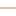

<!doctype html>
<html lang="en">
    <head>
        <meta charset="utf-8">
        <meta http-equiv="X-UA-Compatible" content="IE=edge">
        <meta name="viewport" content="initial-scale=1,user-scalable=no,maximum-scale=1,width=device-width">
        <meta name="mobile-web-app-capable" content="yes">
        <meta name="apple-mobile-web-app-capable" content="yes">
        <link rel="stylesheet" href="css/leaflet.css"><link rel="stylesheet" href="css/L.Control.Locate.min.css">
        <link rel="stylesheet" href="css/qgis2web.css"><link rel="stylesheet" href="css/fontawesome-all.min.css">
        <link rel="stylesheet" href="css/leaflet-search.css">
        <link rel="stylesheet" href="css/leaflet-control-geocoder.Geocoder.css">
        <link rel="stylesheet" href="css/leaflet-measure.css">
        <style>
        html, body, #map {
            width: 100%;
            height: 100%;
            padding: 0;
            margin: 0;
        }
        </style>
        <title></title>
    </head>
    <body>
        <div id="map">
        </div>
        <script src="js/qgis2web_expressions.js"></script>
        <script src="js/leaflet.js"></script><script src="js/L.Control.Locate.min.js"></script>
        <script src="js/leaflet.rotatedMarker.js"></script>
        <script src="js/leaflet.pattern.js"></script>
        <script src="js/leaflet-hash.js"></script>
        <script src="js/Autolinker.min.js"></script>
        <script src="js/rbush.min.js"></script>
        <script src="js/labelgun.min.js"></script>
        <script src="js/labels.js"></script>
        <script src="js/leaflet-control-geocoder.Geocoder.js"></script>
        <script src="js/leaflet-measure.js"></script>
        <script src="js/proj4.js"></script>
        <script src="js/proj4leaflet.js"></script>
        <script src="js/leaflet-search.js"></script>
        <script src="data/aksesibilitas_univunion_0.js"></script>
        <script src="data/UniversitasSurabaya_1.js"></script>
        <script>
        var highlightLayer;
        function highlightFeature(e) {
            highlightLayer = e.target;

            if (e.target.feature.geometry.type === 'LineString') {
              highlightLayer.setStyle({
                color: '#ffff00',
              });
            } else {
              highlightLayer.setStyle({
                fillColor: '#ffff00',
                fillOpacity: 1
              });
            }
        }
        var crs = new L.Proj.CRS('EPSG:32749', '+proj=utm +zone=49 +south +datum=WGS84 +units=m +no_defs', {
            resolutions: [2800, 1400, 700, 350, 175, 84, 42, 21, 11.2, 5.6, 2.8, 1.4, 0.7, 0.35, 0.14, 0.07],
        });
        var map = L.map('map', {
            crs: crs,
            continuousWorld: false,
            worldCopyJump: false, 
            zoomControl:true, maxZoom:28, minZoom:1
        })
        var hash = new L.Hash(map);
        map.attributionControl.setPrefix('<a href="https://github.com/tomchadwin/qgis2web" target="_blank">qgis2web</a> &middot; <a href="https://leafletjs.com" title="A JS library for interactive maps">Leaflet</a> &middot; <a href="https://qgis.org">QGIS</a>');
        var autolinker = new Autolinker({truncate: {length: 30, location: 'smart'}});
        L.control.locate({locateOptions: {maxZoom: 19}}).addTo(map);
        var measureControl = new L.Control.Measure({
            position: 'topleft',
            primaryLengthUnit: 'meters',
            secondaryLengthUnit: 'kilometers',
            primaryAreaUnit: 'sqmeters',
            secondaryAreaUnit: 'hectares'
        });
        measureControl.addTo(map);
        document.getElementsByClassName('leaflet-control-measure-toggle')[0]
        .innerHTML = '';
        document.getElementsByClassName('leaflet-control-measure-toggle')[0]
        .className += ' fas fa-ruler';
        var bounds_group = new L.featureGroup([]);
        function setBounds() {
            if (bounds_group.getLayers().length) {
                map.fitBounds(bounds_group.getBounds());
            }
        }
        function pop_aksesibilitas_univunion_0(feature, layer) {
            layer.on({
                mouseout: function(e) {
                    for (i in e.target._eventParents) {
                        e.target._eventParents[i].resetStyle(e.target);
                    }
                },
                mouseover: highlightFeature,
            });
            var popupContent = '<table>\
                    <tr>\
                        <td colspan="2">' + (feature.properties['fid'] !== null ? autolinker.link(feature.properties['fid'].toLocaleString()) : '') + '</td>\
                    </tr>\
                    <tr>\
                        <th scope="row">Access</th>\
                        <td>' + (feature.properties['Access'] !== null ? autolinker.link(feature.properties['Access'].toLocaleString()) : '') + '</td>\
                    </tr>\
                </table>';
            layer.bindPopup(popupContent, {maxHeight: 400});
        }

        function style_aksesibilitas_univunion_0_0(feature) {
            switch(String(feature.properties['Access'])) {
                case '1,2km (15 menit)':
                    return {
                pane: 'pane_aksesibilitas_univunion_0',
                opacity: 1,
                color: 'rgba(78,206,135,1.0)',
                dashArray: '',
                lineCap: 'square',
                lineJoin: 'bevel',
                weight: 1.0,
                fillOpacity: 0,
                interactive: true,
            }
                    break;
                case '2,4km (30 menit)':
                    return {
                pane: 'pane_aksesibilitas_univunion_0',
                opacity: 1,
                color: 'rgba(122,61,203,1.0)',
                dashArray: '',
                lineCap: 'square',
                lineJoin: 'bevel',
                weight: 1.0,
                fillOpacity: 0,
                interactive: true,
            }
                    break;
                default:
                    return {
                pane: 'pane_aksesibilitas_univunion_0',
                opacity: 1,
                color: 'rgba(218,156,108,1.0)',
                dashArray: '',
                lineCap: 'square',
                lineJoin: 'bevel',
                weight: 1.0,
                fillOpacity: 0,
                interactive: true,
            }
                    break;
            }
        }
        map.createPane('pane_aksesibilitas_univunion_0');
        map.getPane('pane_aksesibilitas_univunion_0').style.zIndex = 400;
        map.getPane('pane_aksesibilitas_univunion_0').style['mix-blend-mode'] = 'normal';
        var layer_aksesibilitas_univunion_0 = new L.geoJson(json_aksesibilitas_univunion_0, {
            attribution: '',
            interactive: true,
            dataVar: 'json_aksesibilitas_univunion_0',
            layerName: 'layer_aksesibilitas_univunion_0',
            pane: 'pane_aksesibilitas_univunion_0',
            onEachFeature: pop_aksesibilitas_univunion_0,
            style: style_aksesibilitas_univunion_0_0,
        });
        bounds_group.addLayer(layer_aksesibilitas_univunion_0);
        map.addLayer(layer_aksesibilitas_univunion_0);
        function pop_UniversitasSurabaya_1(feature, layer) {
            layer.on({
                mouseout: function(e) {
                    for (i in e.target._eventParents) {
                        e.target._eventParents[i].resetStyle(e.target);
                    }
                },
                mouseover: highlightFeature,
            });
            var popupContent = '<table>\
                    <tr>\
                        <td colspan="2">' + (feature.properties['fid'] !== null ? autolinker.link(feature.properties['fid'].toLocaleString()) : '') + '</td>\
                    </tr>\
                    <tr>\
                        <th scope="row">Nama</th>\
                        <td>' + (feature.properties['Nama'] !== null ? autolinker.link(feature.properties['Nama'].toLocaleString()) : '') + '</td>\
                    </tr>\
                    <tr>\
                        <th scope="row">Kampus</th>\
                        <td>' + (feature.properties['Kampus'] !== null ? autolinker.link(feature.properties['Kampus'].toLocaleString()) : '') + '</td>\
                    </tr>\
                    <tr>\
                        <th scope="row">Ranking QS</th>\
                        <td>' + (feature.properties['Ranking QS'] !== null ? autolinker.link(feature.properties['Ranking QS'].toLocaleString()) : '') + '</td>\
                    </tr>\
                    <tr>\
                        <th scope="row">Tahun Berd</th>\
                        <td>' + (feature.properties['Tahun Berd'] !== null ? autolinker.link(feature.properties['Tahun Berd'].toLocaleString()) : '') + '</td>\
                    </tr>\
                    <tr>\
                        <th scope="row">Fakultas</th>\
                        <td>' + (feature.properties['Fakultas'] !== null ? autolinker.link(feature.properties['Fakultas'].toLocaleString()) : '') + '</td>\
                    </tr>\
                    <tr>\
                        <td colspan="2">' + (feature.properties['Foto'] !== null ? '' : '') + '</td>\
                    </tr>\
                </table>';
            layer.bindPopup(popupContent, {maxHeight: 400});
        }

        function style_UniversitasSurabaya_1_0(feature) {
            switch(String(feature.properties['Nama'])) {
                case 'ITS':
                    return {
                pane: 'pane_UniversitasSurabaya_1',
                radius: 4.0,
                opacity: 1,
                color: 'rgba(35,35,35,1.0)',
                dashArray: '',
                lineCap: 'butt',
                lineJoin: 'miter',
                weight: 1,
                fill: true,
                fillOpacity: 1,
                fillColor: 'rgba(215,25,28,1.0)',
                interactive: true,
            }
                    break;
                case 'UIN Sunan Ampel':
                    return {
                pane: 'pane_UniversitasSurabaya_1',
                radius: 4.0,
                opacity: 1,
                color: 'rgba(35,35,35,1.0)',
                dashArray: '',
                lineCap: 'butt',
                lineJoin: 'miter',
                weight: 1,
                fill: true,
                fillOpacity: 1,
                fillColor: 'rgba(245,144,83,1.0)',
                interactive: true,
            }
                    break;
                case 'UNAIR':
                    return {
                pane: 'pane_UniversitasSurabaya_1',
                radius: 4.0,
                opacity: 1,
                color: 'rgba(35,35,35,1.0)',
                dashArray: '',
                lineCap: 'butt',
                lineJoin: 'miter',
                weight: 1,
                fill: true,
                fillOpacity: 1,
                fillColor: 'rgba(254,223,153,1.0)',
                interactive: true,
            }
                    break;
                case 'UNESA':
                    return {
                pane: 'pane_UniversitasSurabaya_1',
                radius: 4.0,
                opacity: 1,
                color: 'rgba(35,35,35,1.0)',
                dashArray: '',
                lineCap: 'butt',
                lineJoin: 'miter',
                weight: 1,
                fill: true,
                fillOpacity: 1,
                fillColor: 'rgba(221,241,180,1.0)',
                interactive: true,
            }
                    break;
                case 'UPNV Jatim':
                    return {
                pane: 'pane_UniversitasSurabaya_1',
                radius: 4.0,
                opacity: 1,
                color: 'rgba(35,35,35,1.0)',
                dashArray: '',
                lineCap: 'butt',
                lineJoin: 'miter',
                weight: 1,
                fill: true,
                fillOpacity: 1,
                fillColor: 'rgba(145,203,168,1.0)',
                interactive: true,
            }
                    break;
                default:
                    return {
                pane: 'pane_UniversitasSurabaya_1',
                radius: 4.0,
                opacity: 1,
                color: 'rgba(35,35,35,1.0)',
                dashArray: '',
                lineCap: 'butt',
                lineJoin: 'miter',
                weight: 1,
                fill: true,
                fillOpacity: 1,
                fillColor: 'rgba(43,131,186,1.0)',
                interactive: true,
            }
                    break;
            }
        }
        map.createPane('pane_UniversitasSurabaya_1');
        map.getPane('pane_UniversitasSurabaya_1').style.zIndex = 401;
        map.getPane('pane_UniversitasSurabaya_1').style['mix-blend-mode'] = 'normal';
        var layer_UniversitasSurabaya_1 = new L.geoJson(json_UniversitasSurabaya_1, {
            attribution: '',
            interactive: true,
            dataVar: 'json_UniversitasSurabaya_1',
            layerName: 'layer_UniversitasSurabaya_1',
            pane: 'pane_UniversitasSurabaya_1',
            onEachFeature: pop_UniversitasSurabaya_1,
            pointToLayer: function (feature, latlng) {
                var context = {
                    feature: feature,
                    variables: {}
                };
                return L.circleMarker(latlng, style_UniversitasSurabaya_1_0(feature));
            },
        });
        bounds_group.addLayer(layer_UniversitasSurabaya_1);
        map.addLayer(layer_UniversitasSurabaya_1);
        var osmGeocoder = new L.Control.Geocoder({
            collapsed: true,
            position: 'topleft',
            text: 'Search',
            title: 'Testing'
        }).addTo(map);
        document.getElementsByClassName('leaflet-control-geocoder-icon')[0]
        .className += ' fa fa-search';
        document.getElementsByClassName('leaflet-control-geocoder-icon')[0]
        .title += 'Search for a place';
        var baseMaps = {};
        L.control.layers(baseMaps,{'Universitas Surabaya<br /><table><tr><td style="text-align: center;"></td><td>ITS</td></tr><tr><td style="text-align: center;"></td><td>UIN Sunan Ampel</td></tr><tr><td style="text-align: center;"></td><td>UNAIR</td></tr><tr><td style="text-align: center;"></td><td>UNESA</td></tr><tr><td style="text-align: center;"></td><td>UPNV Jatim</td></tr><tr><td style="text-align: center;"></td><td></td></tr></table>': layer_UniversitasSurabaya_1,'aksesibilitas_univ — union<br /><table><tr><td style="text-align: center;"></td><td>1,2km (15 menit)</td></tr><tr><td style="text-align: center;"></td><td>2,4km (30 menit)</td></tr><tr><td style="text-align: center;"></td><td></td></tr></table>': layer_aksesibilitas_univunion_0,},{collapsed:false}).addTo(map);
        setBounds();
        map.addControl(new L.Control.Search({
            layer: layer_UniversitasSurabaya_1,
            initial: false,
            hideMarkerOnCollapse: true,
            propertyName: 'Kampus'}));
        document.getElementsByClassName('search-button')[0].className +=
         ' fa fa-binoculars';
        </script>
    </body>
</html>
